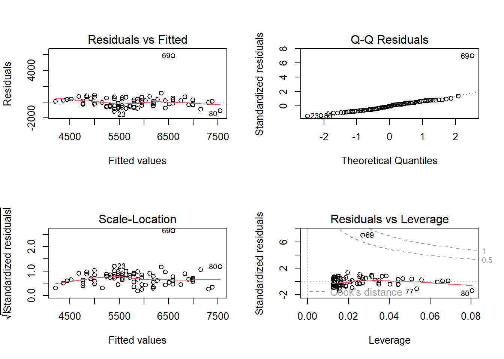

library(ggplot2)
library(plotly)
library(readxl)
mercado <- read_excel('mercado.xlsx')
Plot2 <- ggplot(mercado, aes(x=IDADE, y= SALARIO))+
geom_point(size = 3.5,
pch = 21,
col = 'black',
fill = 'red')+
geom_smooth(method="lm",
se= TRUE)+
theme_bw()+
labs(x="IDADE",
y="SALÁRIO",
title="Diagrama de Dispersão Geral",
subtitle = "Renda Salarial")
ggplotly(Plot2)2 Regressão Linear
2.1 Modelo de Regressão Simples
A Técnica de Regressão Linear é uma das mais conhecida e utilizadas na Estatística. È a porta de entrada para diversos modelos preditivos mais sofisticados, já que muitos destes usam conceitos também utilizados na regressão linear. Essencialmente, a regressão linear pode ser utilizada para prever o valor de uma variável quantitativa (dependente) em função das outras variáveis (independentes ou preditoras).
2.2 Dataset
Para ilustrar a regressão simples, vamos começar com um exemplo em que queremos estudar a relação entre idade (variável preditora \(X_{1}\)) e Salário (variável dependente Y) com uma amostra de 80 funcionários do Supermercadp Formosa.
- Local: Supermercado Formosa
- Amostra: 80 pessoas
- ID : Indetidade do Funcionário
- EDUCAÇÃO : Nível Educacional do Funcionário
- CARGO : Cargo do Funcionário
- LOCAL : Local onde Atua o Funcionário
- IDADE : Idade em anos Completos do Funcionário
- TEMPOCASA : Tempo de Casa
- SALARIO : Salário Mensal do Funcionário em R$
Para ilustrar a regressão simples, vamos começar com um exemplo em que queremos estudar a relação entre idade (variável preditora \(X_{1}\)) e Salário (variável dependente Y) com uma amostra de 80 funcionários do Supermercadp Formosa.
Vamos assumir que o salário varia linearmente conforme a idade. Matematicamente, diremos que o salário é uma função linear da idade: salário = \(Salário \ = \ \beta_{0}+\beta_{1}*Idade\). Entretanto, sabemos que esta relação não é determinística, isto é, não necessariamente a diferença salarial entre uma pessoa com 30 anos e outra com 31 será \(\beta_{1}\). Isso ocorre porque há outros fatores que interferem no salário e não estão incluídos no modelo. Este ruído será representado por um termo de erro do modelo:
\[ Salário = \beta_{0} + \beta_{1} * Idade + erro\]
NO modelo de regressão simples tradicional, o termo de erro tem valor esperado igual a7 zero, e isso implica no salário médio das pessoas com determinada idade, denotado por E(Salário), dado pela parte determinística da equação:
\[ E(Salário) = \beta_{0} + \beta_{1} * Idade\]
\(\beta_{0} + \beta_{1}\) são parâmetros do modelo e podem ser estimados a partir dos dados da amostra. NO exemplo , usaremos os dados amostrais para estimar esses parâmetros. o Primeiro passo e construir um gráfico de dispersão em que colocamos a idade no eixo x e o salário no eixo y.
2.2.1 Gráfico de Dispersão Geral
O script utilizado para gerar o gráfico de dispersão no R é mostrado a seguir:
O gráfico mostra originalmente um ponto muito distante dos demais, no qual é o salário de um dos diretores da Empresa que ganha R$ 12.465,80
library(readxl)
mercado2 <- read_excel('mercado2.xlsx')O script utilizado para gerar o gráfico de dispersão no R sem a observação 69 correspondente a (60 anos; R$ 12.465,80) é mostrado a seguir:
2.2.2 Gráfico de Dispersão sem Outlier 69º
library(ggplot2)
library(plotly)
library(readxl)
mercado2 <- read_excel('mercado2.xlsx')
Plot3 <- ggplot(mercado2, aes(x=IDADE, y= SALARIO))+
geom_point(size = 3.5,
pch = 21,
col = 'black',
fill = 'red')+
geom_smooth(method="lm",
se= TRUE)+
theme_bw()+
labs(x="IDADE",
y="SALÁRIO",
title="Diagrama de Dispersão sem Outliers",
subtitle = "Renda Salarial")
ggplotly(Plot3)O gráfico mostra que há uma tendência de crescimento do salário quando a idade aumenta, ilustrado pela reta inclinada, que chamaremos de reta de mínimos quadrados.
2.3 Reta de Mínimos Quadrados
A seguir, vamos ver como encontrar a reta que estabelece uma relação entre as duas variáveis:
\[ \hat{y} = \hat{\beta_{0}} + \hat{\beta_{1}x}\]
O símbolo “^” em \(\beta_{0}\) e \(\beta_{1}\) indica que estamos estimando os parâmetros do modelo populacional , já que contaremos apenas com dados amostrais no nosso cálculo. \(\hat{y}\) é o valo previsto do salário médio dos funcionários com idade “x”.
O objetivo é obter estimadores \(\hat{\beta_{0}}\) e \(\hat{\beta_{1}}\), isto é, a reta, que melhor se ajusta aos dados. Como critério de ajuste utilizaremos a “Soma de Quadrados dos Resíduos” (SQR), definida a seguir. O resíduo da7 observação “i” da amostra é a diferença entre o seu valor observado \(y_{i}\) e o valor previsto \(\hat{y}_{i}\).
\[ SQR = min \sum_{i=1}^{n} (y_{i}-\hat{y}_{i})^{2} = min \sum_{i=1}^{n} e_{i}^{2}\]
em que \(e_{i}\) é o resíduo da observação “i”.
2.4 Coeficiente de Regressão Linear
Para fazer uma análise de regressão no R, usaremos a função lm, do pacote basic, e os dados do Supermercado Formosa. A sintaxe para rodar a regressão linear simples é lm(y~x).
Modelo1 = lm(mercado$SALARIO~mercado$IDADE)
summary(Modelo1)
Call:
lm(formula = mercado$SALARIO ~ mercado$IDADE)
Residuals:
Min 1Q Median 3Q Max
-1213.0 -505.3 -65.7 340.9 5872.4
Coefficients:
Estimate Std. Error t value Pr(>|t|)
(Intercept) 1818.11 504.51 3.604 0.00055 ***
mercado$IDADE 79.59 9.96 7.991 9.8e-12 ***
---
Signif. codes: 0 '***' 0.001 '**' 0.01 '*' 0.05 '.' 0.1 ' ' 1
Residual standard error: 849.4 on 78 degrees of freedom
Multiple R-squared: 0.4501, Adjusted R-squared: 0.4431
F-statistic: 63.86 on 1 and 78 DF, p-value: 9.795e-12Uma das tarefas mais corriqueiras dos analista de dados é a produção de tabelas. Seja para apresentar frequências, estatísticas descritivas (media, mediana, moda, etc), seja para apresentar resultados de modelos de regressão.
library(stargazer)Warning: package 'stargazer' was built under R version 4.1.2
Please cite as: Hlavac, Marek (2022). stargazer: Well-Formatted Regression and Summary Statistics Tables. R package version 5.2.3. https://CRAN.R-project.org/package=stargazer library(kableExtra)
library(skimr)Warning: package 'skimr' was built under R version 4.1.3mercado2 |> skim()| Name | mercado2 |
| Number of rows | 79 |
| Number of columns | 7 |
| _______________________ | |
| Column type frequency: | |
| character | 4 |
| numeric | 3 |
| ________________________ | |
| Group variables | None |
Variable type: character
| skim_variable | n_missing | complete_rate | min | max | empty | n_unique | whitespace |
|---|---|---|---|---|---|---|---|
| ID | 0 | 1 | 5 | 5 | 0 | 79 | 0 |
| EDUCAÇÃO | 0 | 1 | 8 | 10 | 0 | 2 | 0 |
| CARGO | 0 | 1 | 7 | 8 | 0 | 3 | 0 |
| LOCAL | 0 | 1 | 7 | 8 | 0 | 2 | 0 |
Variable type: numeric
| skim_variable | n_missing | complete_rate | mean | sd | p0 | p25 | p50 | p75 | p100 | hist |
|---|---|---|---|---|---|---|---|---|---|---|
| IDADE | 0 | 1 | 49.62 | 9.59 | 30.0 | 43.5 | 49.0 | 55.5 | 72.0 | ▃▇▇▃▃ |
| TEMPOCASA | 0 | 1 | 10.80 | 7.40 | 0.0 | 3.5 | 12.0 | 16.5 | 25.0 | ▇▃▅▆▃ |
| SALARIO | 0 | 1 | 5692.96 | 855.18 | 4186.6 | 4894.3 | 5660.4 | 6269.8 | 7481.2 | ▆▇▆▆▃ |
Na saída acima podemos ver os estimadores \(\hat{\beta_{0}}\) e \(\hat{\beta_{1}}\) (estimate), seus erros padrão (Std. Error), a estatística t (t value) e o valor-p do teste de hipótese (Pr(>|t|)).
Os etimadores \(\hat{\beta_{0}}\) e \(\hat{\beta_{1}}\) possuem um erro padrão que depende de vários fatores, entre eles o tamanho da amostra e o desvio-padrão do erro do modelo. Com esses valores podemos construir uma estimativa intervalar, com determinado nível de confiança, para os parâmetros populacionais desconhecidos \(\beta_{0}\) e \(\beta_{1}\).
Modelo2 = lm(mercado2$SALARIO~mercado2$IDADE)
summary(Modelo2)
Call:
lm(formula = mercado2$SALARIO ~ mercado2$IDADE)
Residuals:
Min 1Q Median 3Q Max
-1177.94 -445.50 -14.98 417.77 1263.66
Coefficients:
Estimate Std. Error t value Pr(>|t|)
(Intercept) 2165.813 310.449 6.976 9.21e-10 ***
mercado2$IDADE 71.083 6.144 11.569 < 2e-16 ***
---
Signif. codes: 0 '***' 0.001 '**' 0.01 '*' 0.05 '.' 0.1 ' ' 1
Residual standard error: 520.2 on 77 degrees of freedom
Multiple R-squared: 0.6348, Adjusted R-squared: 0.63
F-statistic: 133.8 on 1 and 77 DF, p-value: < 2.2e-16A presença desse outlier tem consequências importantes para o resultado da regressão. Os valores de \(\hat{\beta}_{0}\) e \(\hat{\beta}_{1}\) mudam de (1818,11; 79,59) para (2165,81; 71,08), respectivamente, o que faz com que os valores previstos também mudem, especialmente nos extremos, isto é, para idades muito baixas e muito altas. Isso significa que esse ponto, além de outlier, é um ponto influente, isto é, a presença dele muda as estimativas do modelo.
Na linguagem R, para obter o intervalo de 95% de confiança para a inclinação da reta, utiliza-se o script:
confint(Modelo1, "IDADE", level = 0.95) 2.5 % 97.5 %
IDADE NA NA2.5 Previsão
Para fazer a previsão do salário usando a linguagem R, pode-se utilizar a função predict. Por exemplo, que estamos interessados prever o salário de um funcionário de 40 anos e outro de 50 anos.
O script no R é dado a seguir:
NovaIdade = data.frame(IDADE = c(40,50))
predict(Modelo1,
newdata = NovaIdade,
interval = "prediction"
) fit lwr upr
1 4205.757 2459.748 5951.766
2 4364.933 2627.389 6102.477
3 4444.521 2710.885 6178.158
4 4524.109 2794.162 6254.057
5 4683.286 2960.056 6406.516
6 4762.874 3042.670 6483.078
7 4762.874 3042.670 6483.078
8 4762.874 3042.670 6483.078
9 4842.462 3125.060 6559.864
10 4842.462 3125.060 6559.864
11 4922.050 3207.225 6636.875
12 4922.050 3207.225 6636.875
13 5001.638 3289.165 6714.111
14 5001.638 3289.165 6714.111
15 5001.638 3289.165 6714.111
16 5001.638 3289.165 6714.111
17 5160.815 3452.364 6869.265
18 5240.403 3533.621 6947.184
19 5240.403 3533.621 6947.184
20 5240.403 3533.621 6947.184
21 5319.991 3614.650 7025.332
22 5319.991 3614.650 7025.332
23 5399.579 3695.449 7103.709
24 5399.579 3695.449 7103.709
25 5399.579 3695.449 7103.709
26 5399.579 3695.449 7103.709
27 5399.579 3695.449 7103.709
28 5399.579 3695.449 7103.709
29 5479.167 3776.017 7182.317
30 5479.167 3776.017 7182.317
31 5479.167 3776.017 7182.317
32 5479.167 3776.017 7182.317
33 5479.167 3776.017 7182.317
34 5558.755 3856.356 7261.154
35 5558.755 3856.356 7261.154
36 5558.755 3856.356 7261.154
37 5558.755 3856.356 7261.154
38 5638.343 3936.464 7340.223
39 5638.343 3936.464 7340.223
40 5717.931 4016.341 7419.522
41 5717.931 4016.341 7419.522
42 5797.520 4095.987 7499.052
43 5797.520 4095.987 7499.052
44 5797.520 4095.987 7499.052
45 5797.520 4095.987 7499.052
46 5797.520 4095.987 7499.052
47 5877.108 4175.401 7578.814
48 5877.108 4175.401 7578.814
49 5877.108 4175.401 7578.814
50 5956.696 4254.585 7658.806
51 5956.696 4254.585 7658.806
52 5956.696 4254.585 7658.806
53 5956.696 4254.585 7658.806
54 6036.284 4333.538 7739.029
55 6115.872 4412.261 7819.483
56 6195.460 4490.753 7900.167
57 6195.460 4490.753 7900.167
58 6195.460 4490.753 7900.167
59 6195.460 4490.753 7900.167
60 6275.048 4569.016 7981.081
61 6275.048 4569.016 7981.081
62 6354.636 4647.049 8062.224
63 6434.225 4724.854 8143.595
64 6434.225 4724.854 8143.595
65 6513.813 4802.430 8225.195
66 6593.401 4879.780 8307.021
67 6593.401 4879.780 8307.021
68 6593.401 4879.780 8307.021
69 6593.401 4879.780 8307.021
70 6752.577 5033.802 8471.352
71 6832.165 5110.476 8553.854
72 6911.753 5186.927 8636.580
73 6991.341 5263.156 8719.527
74 6991.341 5263.156 8719.527
75 6991.341 5263.156 8719.527
76 6991.341 5263.156 8719.527
77 7150.518 5414.955 8886.081
78 7309.694 5565.882 9053.506
79 7389.282 5641.023 9137.541
80 7548.458 5790.668 9306.249Pode-se concluir, que um funcionário de 40 anos terá um salário entre R$ e R$ com 95% de probabilidade.
2.6 Análise de Resíduo
Os Testes de hipóteses anteriores só têm validade se as suposições do modelo estiverem satisfeitas. As suposições são as mesmas do modelo de regressão simples ou multipla: o erro deve ter distribuiçao normal com média 0, variância constante e independentes.
Existem diversos pacotes na linguagem R para fazer a análise dos resíduos, mas será enfatizado apenas os gráficos mai comuns, que podem ser feitos sem a instalação de nehhum pacote adicional.
O script a seguir cria os gráficos para regressão linear simples com n=80.
par(mfrow=c(2,2))
plot(Modelo1)
O primeiro gráfico é chamado de (Residuals vs Fitted) mostra que a observação 69 tem um resíduo extremamente alto, considerando um outlier da regressão.
O segundo gráfico, na direita superior, é chamado de (QQ plot), e é uma alternativa ao histograma para averiguar se há normalidade dos erros. Espera-se que, se a distribuição for normal, os pontos estarão próximos a uma reta. A observação 69 está bem longe dessa reta, colocando em dúvida a suposição de que os erros têm distribuição normal.
O gráfico da esquerda inferior (Scale-Location) pode ser utilizado para averiguar se a variância é constante. Quando a variância é constante, a linha cinza-claro não apresenta oscilações significativas ao longo do eixo x.
O gráfico inferior a direita (Residuals vs Leverage) nos ajuda a identificar pontos influentes na regressão. Utiliza-se como critério a distância de Cook.
A distância de Cook mede o quanto determinada observação influência o resultado da regressão.
Pontos acima da linha tracejada inferior são considerados influentes, caso da observação 69.
O script a seguir cria os gráficos para regressão linear simples com n=79, ou seja sem a observação 69, coniderada um outlier.
par(mfrow=c(2,2))
plot(Modelo2)
2.7 Modelo de Regressão Múltipla
Geralmente os modelos de regressão linear simples possuem alto erro padrão e baixo \(R^{2}\). Isso porque a variável Y(salário) é explicada por diversos fatores, não só pela idade do funcionário. Portanto, seria interessante utilizar mais de uma variável preditora no modelo para prever o salário com maior precisão.
Quando há mais de uma variável preditora, temos o Modelo de Reressão Múltipla.
Em termos gerais, um modelo de regressão linear múltipla é dado por:
\[ Y_{i} = \beta_{0} + \sum_{j=1}^{k} \beta_{j} X_{ij}+\epsilon_{i}\]
Com adição de variáveis ao modelo, espera-se que o \(R^{2}\) aumente consideravelmente. Na verdade, mesmo uma variável irrelevante para o modelo provocará um aumento (insignificante do \(R^{2}\)). Desta forma, não é recomendável utilizar o \(R^{2}\) para comparar um modelo com um variável preditora e outro modelo com duas preditoras. O modelo com duas preditoras sempre possuirá um \(R^{2}\) maior, principalmente se o número de variáveis prediotas for grande em comparação com o tamanho da amostra.
O \(R^{2}_{ajustado}\) é uma medida que permite comparar modelos com diferentes tamanhos, pois para cada variável adicionada ao modelo a medida sofre uma penalização.
O \(R^{2}_{ajustado}\) de um modelo com mais variáveis só aumentará se essa nova variável ajudar a prever o Y. Caso contrário, o \(R^{2}_{ajustado}\) pode diminuir em relação ao modelo sem tal variável.
O modelo de regressão linear múltipla utilizará as variáveis: idade, tempo de casa, educação, cargo e local de trabalho para prever o salário.
A função utilizada para rodar a regressão múltipla é a mesma que usamos para o modelo1 de regressão simples, mas agora colocaremos as variáveis preditoras após o “~” e separadas por “+”.
Modelo3 = lm(mercado2$SALARIO~mercado2$EDUCAÇÃO+mercado2$CARGO+mercado2$LOCAL+mercado2$IDADE+mercado2$TEMPOCASA)
summary(Modelo3)
Call:
lm(formula = mercado2$SALARIO ~ mercado2$EDUCAÇÃO + mercado2$CARGO +
mercado2$LOCAL + mercado2$IDADE + mercado2$TEMPOCASA)
Residuals:
Min 1Q Median 3Q Max
-786.95 -246.45 -14.05 188.33 1315.44
Coefficients:
Estimate Std. Error t value Pr(>|t|)
(Intercept) 3547.185 300.270 11.813 < 2e-16 ***
mercado2$EDUCAÇÃOSUPERIOR 128.199 108.170 1.185 0.239849
mercado2$CARGODIRETOR 737.071 143.260 5.145 2.22e-06 ***
mercado2$CARGOGERENTE 345.073 93.222 3.702 0.000416 ***
mercado2$LOCALINTERIOR 139.279 94.337 1.476 0.144198
mercado2$IDADE 18.689 7.306 2.558 0.012636 *
mercado2$TEMPOCASA 75.007 9.198 8.154 7.89e-12 ***
---
Signif. codes: 0 '***' 0.001 '**' 0.01 '*' 0.05 '.' 0.1 ' ' 1
Residual standard error: 365.8 on 72 degrees of freedom
Multiple R-squared: 0.8311, Adjusted R-squared: 0.8171
F-statistic: 59.07 on 6 and 72 DF, p-value: < 2.2e-16Note que a saída do R para regressão múltipla é bem similar à da simples, A diferença é que agora há várias linhas, uma para cada variável independente, com suas estimativas, erros padrão, estatística t e valor-p.
2.8 Interpretação dos Coeficientes
O primeiro coeficiente, relativo a variável Educação, motra uma estimativa da diferença média entre os salários dos funcionários com nível superior e com nível secundário, mantida todas as variáveis constante. O valor estimado é 128,199. Entretanto, o erro padrão dessa estimativa é grande (108,17) e acarreta um valor-p alto = 0.23. Portanto, não conseguimos rejeitar a hipótese de que o coeficiente \(\beta_{1}\) é diferente de zero. Desta forma, variável “Educação” não se mostrou significante no modelo, e será retirada.
O segundo o terceiro coeficiente estão relacionados ao Cargo. O valor-p de ambas é muito baixo, menor que 0.0001, indicando fortes evidências estatísticas de que esses coeficientes na população são diferentes de zero.
O quarto coeficiente, relativo a Local de Trabalho, assim como o primeiro, não é significante (valor-p = 0.14). Portanto, não há evidências estatísticas ao nível de 95% de significância de que os salários médios na capital e no interior são diferentes.
O quinto coeficiente, relativo a Idade, mostra que o salário médio tem um aumento estimado de 18.68 por ano. Ao nível de significância de 0.05, podemos dizer que há evidências estatísticas de que o coeficiente na população é diferente de zero.
O sexto coeficiente, relativo ao Tempo de Casa, indica que a cada ano dicional do funcionário no supermercado há um amento estimado no salário de 75,007 reais. Neste caso, conclui-se também que há evidências de que o coeficiente relativo ao tempo de casa na população \(\beta_{6}\), é diferente de zero, pois valor-p < 0.0001.
2.9 Modelo Final
Com base no modelo anterior, verificou-se que, as variáveis: Nível Educacional e Local onde Atua o Funcionário não se mostraram estatisticamente significantes, com isso foram retirada na composição do modelo final.
Note que o modelo final não fica guardado em nenhum objeto no R. È preciso rodar novamente apenas as variáveis selecionadas.
Modelo4 = lm(mercado2$SALARIO~+mercado2$CARGO+mercado2$IDADE+mercado2$TEMPOCASA)
summary(Modelo4)
Call:
lm(formula = mercado2$SALARIO ~ +mercado2$CARGO + mercado2$IDADE +
mercado2$TEMPOCASA)
Residuals:
Min 1Q Median 3Q Max
-807.51 -215.10 -37.22 180.78 1274.19
Coefficients:
Estimate Std. Error t value Pr(>|t|)
(Intercept) 3696.434 292.911 12.620 < 2e-16 ***
mercado2$CARGODIRETOR 673.404 137.882 4.884 5.84e-06 ***
mercado2$CARGOGERENTE 326.859 93.630 3.491 0.000815 ***
mercado2$IDADE 19.932 7.347 2.713 0.008292 **
mercado2$TEMPOCASA 72.340 9.001 8.037 1.10e-11 ***
---
Signif. codes: 0 '***' 0.001 '**' 0.01 '*' 0.05 '.' 0.1 ' ' 1
Residual standard error: 369.7 on 74 degrees of freedom
Multiple R-squared: 0.8227, Adjusted R-squared: 0.8131
F-statistic: 85.84 on 4 and 74 DF, p-value: < 2.2e-162.10 Comparação dos Modelos
AIC(Modelo1,Modelo2, Modelo3, Modelo4) df AIC
Modelo1 3 1310.126
Modelo2 3 1216.318
Modelo3 8 1165.377
Modelo4 6 1165.234BIC(Modelo1,Modelo2, Modelo3, Modelo4) df BIC
Modelo1 3 1317.272
Modelo2 3 1223.426
Modelo3 8 1184.333
Modelo4 6 1179.4512.11 Multicolinearidade
Quando uma variável preditora possui alta correlação com outras variáveis preditoras ou com uma combinação delas, temos um problema de multicolinearidade na regressão.
Quando isso ocorre, as estimativas dos coeficientes apresentam alto erro padrão e geralmente são não significantes, tornando difícil avaliar o efeito de cada preditor no modelo.
Há diversas formas de detectar multicolinearidade, sendo as mais utilizadas a Tolerância e o VIF(Variance inflation fator). Ambas baseiam-se em quanto uma variável preditora pode ser explicada pela combinação linear das outras variáveis preditoras.
Uma boa medida disto é o \(R^{2}\) da regressão em que a variável preditora “j” é explicada por todas as outras variáveis preditora. Um \(R^{2}\) alto indica multicolinearidade.
A Tolerância e o VIF da variável preditora “j” são dados por:
\[ Tolerância = 1- R^{2}_{j}\]
\[ VIF = \frac{1}{Tolerância} = \frac{1}{1- R^{2}_{j}}\]
O cálculo do VIF na linguagem R pode ser feito utilizando o pacote car.
library(car)
vif(Modelo3) GVIF Df GVIF^(1/(2*Df))
mercado2$EDUCAÇÃO 1.062805 1 1.030925
mercado2$CARGO 1.502308 2 1.107107
mercado2$LOCAL 1.296742 1 1.138746
mercado2$IDADE 2.859579 1 1.691029
mercado2$TEMPOCASA 2.704690 1 1.644594Vinhos que nenhuma variável possui VIF (ou GVIF) maior que 5, portanto, não temos problema de multicolinearidade no nosso modelo.